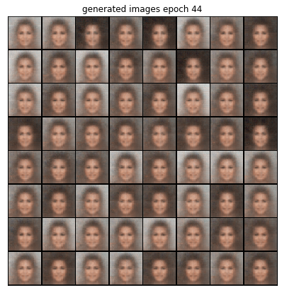

Face Synthesis with a Variational Autoencoder
A VAE compresses each face into a point in a smooth 128-dimensional space and learns to decode any point back into a face. That gives one model for sampling new faces, reconstructing real ones and measuring how similar two faces are.
- Variational inference
- EECS 6327 · Probabilistic Models in ML
- York University
- PyTorch · CelebA
128-Dlatent space for every face
180 mintotal training, the slowest of the three models
Bestface symmetry in the study, at the cost of blur
SGDlr 5e-3 with 0.95 decay, batch 144
Watch it learn
Generated faces during training
SliderSnapshots saved in the repository. Early on the decoder produces a blurry average face; structure and variety appear as the latent space organises itself.

How a VAE works
- EncodeA convolutional encoder maps a face to the mean μ and spread σ of a Gaussian over the 128-D latent space.
- SampleDraw z = μ + σ·ε with ε ~ N(0, I). This reparameterisation keeps sampling differentiable.
- DecodeA transposed-convolution decoder turns z back into an image.
- TrainMaximise reconstruction log-likelihood minus the KL divergence that pulls q(z|x) toward N(0, I).
The KL term is what makes the space smooth: nearby points decode to similar faces, so you can sample anywhere and interpolate between faces. It is also why VAEs blur: the model hedges between plausible faces rather than committing to one. See the VAE on MNIST page to play with the reparameterisation trick directly.